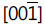
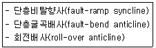
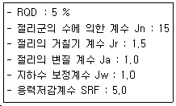
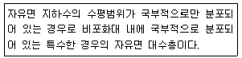
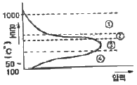

응용지질기사 (2019-04-27 기출문제)
1과목: 암석학 및 광물학
1. 변성대는 지체구조와 밀접한 관계가 있다. 지판과 지판의 경계가 수렴형으로 나타나는 지역에서의 변성작용의 유형으로 옳은 것은?
- 호상열도 아래에서는 저압형 변성작용, 해구부근에서는 고압형 변성작용이 일어난다.
- 호상열도 아래에서는 고압형 변성작용, 해구부근에서는 저압형 변성작용이 일어난다.
- 호상열도 아래, 해구부근 모두 저압형 변성작용이 일어난다.
- 호상열도 아래, 해구부근 모두 고압형 변성작용이 일어난다.
(정답률: 72%)

2. 다음 중 유기적 퇴적암이 아닌 것은?
- 백악
- 석탄
- 응회암
- 규조토
(정답률: 78%)
3. 파쇄변성작용으로 형성된 변성암이 아닌 것은?
- 압쇄암(mylonite)
- 슈도타킬라이트(pseudotachylite)
- 안구상 편마암(augen gneiss)
- 호상 편마암(banded gneiss)
(정답률: 55%)
4. 다음 중 열점(hot spot)에서 분출되는 용암의 성분은?
- 화강암질
- 안산암질
- 조면암질
- 현무암질
(정답률: 79%)
5. 실리카(SiO2)의 함량으로 화성암을 분류할 때 중성암에 해당하는 것은?
- 안산암
- 유문암
- 현무암
- 화강암
(정답률: 74%)
6. 아르코스(arkose) 사암의 설명으로 맞는 것은?
- 장석이 25 % 이상인 사암이다.
- 셰일이 25 % 이상인 사암이다.
- 운모가 25 % 이상인 사암이다.
- 점토가 25 % 이상인 사암이다.
(정답률: 75%)
7. 황토(loess)에 대한 설명으로 옳지 않은 것은?
- 대륙의 반건조 지대와 그 인접 지역에 분포하는 세립의 풍성퇴적물이다.
- 황토를 구성하는 광물립은 주로 신선한 석영, 장석, 운모, 방해석이다.
- 황토는 응결하는 힘이 있어서 층리가 잘 발달된다.
- 황토가 황색을 띠는 사실은 산화작용을 받았음을 의미한다.
(정답률: 73%)
8. 화성암의 산상 중에서 조화적인 관입으로 생성된 것은?
- 암맥
- 암상
- 암주
- 저반
(정답률: 62%)
9. 화성암을 구성하고 있는 조암광물의 크기(입도)는 주로 무엇에 의하여 결정되는가?
- 마그마의 밀도
- 마그마의 온도
- 마그마의 냉각속도
- 마그마의 화학성분
(정답률: 85%)
10. 다음 중 변성지층이 아닌 것은?
- 연천층군
- 상원층군
- 옥천층군
- 연일층군
(정답률: 56%)
11. 다음 중 완전고용체(연속고용체)에 속하는 광물은?
- 감람석, 사장석
- 석영, 정장석
- 암염, 석영
- 방해석, 아라고나이트
(정답률: 66%)
12. 다음 중 황화광물이 아닌 것은?
- 진사
- 남동석
- 휘동석
- 섬아연석
(정답률: 46%)
13. 대개의 이온들은 한 가지 원소로 구성되어 있지만, 두 가지 또는 그 이상의 원소로 구성된 원소를 무엇이라 하는가?
- 양이온
- 합이온
- 착이온
- 복수이온
(정답률: 61%)
14. 결정면 (100)과 (110)의 정대지수는?

- [010]
- [110]
- [001]
(정답률: 41%)
15. 다음 중 동질이상(Polymorphism)의 관계가 아닌 것은?
- 규선석과 홍주석
- 황철석과 백철석
- 흑연과 다이아몬드
- 자철석과 적철석
(정답률: 68%)
16. 다음 광물 중 층간수를 함유하고 있는 광물은?
- 정장석
- 몬모릴로나이트
- 적철석
- 흑연
(정답률: 77%)
17. 쌍정에 관한 설명으로 옳은 것은?
- 쌍정축은 거의 대부분이 2회축이다.
- 대칭심쌍정에 관련된 대칭축을 쌍정축이라고 한다.
- 쌍정축의 방향은 일반적으로 쌍정축과 수직인 정대지수로 나타낸다.
- 자연산 석영은 쌍정을 이루는 일이 드물다.
(정답률: 50%)
18. 다음 중 평행연정(parallel growth)을 관찰할 수 있는 광물은?
- 첨정석
- 돌로마이트
- 황철석
- 석고
(정답률: 44%)
19. 칼슘(Ca)의 원자번호는 20이다. 즉, 칼슘 원자는 총 20개의 전자를 가지고 있다. 이 때 최외각 전자는 몇 개인가?
- 1개
- 2개
- 3개
- 4개
(정답률: 72%)
20. 다음 중 부(Negative)의 일축성 결정의 굴절률을 표시한 것은? (단, Nw : 상광선에 대한 굴절률, Nɛ : 이상광선에 대한 굴절률)
- Nw = Nɛ
- Nw ＜ Nɛ
- Nw ＞ Nɛ
- Nw ≤ Nɛ
(정답률: 57%)
2과목: 구조지질학
21. 지하에 위치하는 암염이나 마그마의 상승으로 만들어지는 지질구조는?
- 단층구조
- 향사구조
- 돔구조
- 배사구조
(정답률: 79%)
22. 다음 지진파에 대한 설명 중 옳지 않은 것은?
- 실체파(body wave)에는 P파와 S파가 있다.
- S파는 약 6 km/s의 속도를 가지며 가장 빠르다.
- 표면파(surface wave)는 파장이 매우 길며 진폭이 크다.
- P파는 진앙에서 반대쪽이 103 ~ 143° 사이에 암영대를 형성한다.
(정답률: 76%)
23. 지진에 대한 설명으로 가장 옳은 것은?
- 지진이 발생한 곳의 바로 위 지표 지점을 진원(hypocenter)이라고 한다.
- 지진운동의 주요 원인은 중앙해령, 화산열도 등에서 일어나는 화산활동이다.
- 실체파 가운데 P파는 진동방향과 진행방향이 수직이므로 횡파라고도 한다.
- 지진파는 지구의 내부를 관통하는 실체파와 표면을 따라 움직이는 표면파로 구분된다.
(정답률: 69%)
24. 해양판이 맨틀로 하강하는 섭입대(subduction zone)에서 약 700km 깊이까지 심발지진의 발생이 가능한 원인은?
- 각섬암-에클로자이트 상전이
- 섭입되는 해양판의 부분융용
- 고압변성작용
- 차가운 해양판의 섭입으로 인한 낮은 지온구배
(정답률: 67%)
25. 다음 중 신장절리(extension joint)의 특징으로 볼 수 없는 것은?
- 절리간격이 비교적 일정하다.
- 공액상(conjugate)으로 발달한다.
- 절리면이 거칠고 암질에 따라 발달 정도가 다르다.
- 경사가 수직에 가깝고 연장성이 양호하다.
(정답률: 59%)
26. 다음 중 점완단층에 대한 설명으로 옳지 않은 것은?
- 점완단층의 단층면은 곡면을 이룬다.
- 점완단층은 정단층 운동으로 형성된다.
- 점완단층은 흔히 상반 배사구조가 생긴다.
- 점완단층은 지표에서 경사가 완만하나 지하로 깊어짐에 따라 급경사를 이룬다.
(정답률: 59%)
27. 층리의 주향이 N45W, 경사가 60SW 일 때, N80W 방향 단면에서 층리의 위경사 각도는?
- 35°
- 45°
- 55°
- 65°
(정답률: 53%)
28. 수평 습곡축을 가지는 두 습곡에 의해 돔과 분지형태(dome and basin pattern)의 중첩습곡구조가 발생할 수 있는 경우는?
- 중첩된 두 습곡의 습곡축이 평행하고, 두 습곡축면이 모두 수직이다.
- 중첩된 두 습곡의 습곡축이 직각을 이루며 습곡축면이 모두 수직이다.
- 중첩된 두 습곡의 습곡축이 평행하고, 선행습곡 축면은 수평, 후기 습곡축면은 수직이다.
- 중첩된 두습곡의 습곡축이 직각을 이루며 선행 습곡 축면은 수평, 후기 습곡축면은 수직이다.
(정답률: 54%)
29. 다음 중 선구조(lineation)가 아닌 것은?
- 단층조선
- 엽리구조(Foliation)
- 멀리온구조(mullion)
- 부딘구조(Boudinage)
(정답률: 54%)
30. 점판암대(slate belts)의 구조적 특징이 아닌 것은?
- 편리
- kink 발달
- simple fold
- 벽개(cleavage) 발달
(정답률: 48%)
31. 아래와 같은 지질구조가 형성되는 곳은?

- 정단층계
- 변환단층계
- 주향이동단층계
- 스러스트단층계
(정답률: 48%)
32. 맨틀대류의 상승부에 나타나는 특징이 아닌 것은?
- 열곡발달
- 천발지진
- 해구형성
- 베개용암분출
(정답률: 68%)
33. 다음 지질구조에서 수평방향의 인장응력(tensile stress)에 의해 형성된 구조는?
- 돔구조
- 역단층
- 정단층
- 스러스트
(정답률: 70%)
34. 다음 중 카르스트(Karst) 지형과 가장 관계가 깊은 암석은?
- 규암
- 석회암
- 유문암
- 현무암
(정답률: 78%)
35. 다음 중 14C 동위원소 방법에 의해 연대층정이 가능한 물질로 가장 적합하지 않은 것은?
- 나무조각
- 동물의 뼈
- 쳐어트
- 조개껍질
(정답률: 69%)
36. 어느 지역의 지질구조(층리, 편리 등)와 평행하게 관입한 암체는?
- 암맥(dyke)
- 암주(stock)
- 혼암맥(composite vein)
- 조화관입(concordant intrusion)
(정답률: 65%)
37. 해령(대양저 산맥)에서 500 km 떨어진 곳에서 시추한 용암의 K-Ar 연령이 약 900만년이다. 판구조 운동의 속도가 일정하다고 가정했을 때 해저확장속도는?
- 5.6 cm/year
- 5.6 mm/year
- 7.6 cm/year
- 7.6 mm/year
(정답률: 68%)
38. 스러스트 단층에 대한 설명으로 옳지 않는 것은?
- 일종의 역단층으로 단층면의 경사각은 50° 이상이다.
- 스러스트 단층은 고기의 지층을 신기의 지층 위로 올려놓는다.
- 단층면의 상반 지괴가 하반지괴보다 더 많이 미끄러져 올라간 단층이다.
- 스러스트 단층은 지각이 수축운동을 받는 조산대 내에서 흔히 볼 수 있다.
(정답률: 60%)
39. 다음 중 지질연대 단위와 시간층서 단위의 연결로 옳지 않은 것은?
- 대 - 대층
- 기 - 계
- 세 - 대
- 절 - 조
(정답률: 65%)
40. 다음 중 연성 전단대에서 관찰하기 어려운 지질 구조는?
- 단층 각력
- 칼집 습곡
- 압쇄암
- S – C 밴드 구조
(정답률: 56%)
3과목: 탐사공학
41. 지하투과 레이다 탐사법(GPR)에서 사용되는 전자기 펄스의 일반적인 주파수 대역은?
- 1 Hz ~ 100 Hz
- 100 Hz ~ 1 kHz
- 10 kHz ~ 1 MHz
- 10 MHz ~ 1 GHz
(정답률: 67%)
42. 균질한 탄성 매질에서 전파되는 탄성파의 진폭과 거리의 관계로 옳은 것은?
- 탄성파의 진폭은 거리에 반비례
- 탄성파의 진폭은 거리의 제곱에 반비례
- 탄성파의 진폭은 거리의 제곱근에 반비례
- 탄성파의 진폭은 거리의 세제곱에 반비례
(정답률: 38%)
43. 다음 중 전자파의 감쇠계수에 영향을 주는 요인과 가장 거리가 먼 것은?
- 강성율
- 유전율
- 투자율
- 신호의 각주파수
(정답률: 37%)
44. 지하투과 레이더 탐사법(GPR)에서 레이더파의 전파속도에 가장 큰 영향을 미치는 매질의 성질은?
- 밀도
- 대자율
- 유전율
- 전기비저항
(정답률: 57%)
45. 다음 중 중력보정이 아닌 것은?
- 조석 보정
- 일변화 보정
- 프리에어 보정
- 에트뵈스 보정
(정답률: 63%)
46. 석유탐사 검층 중 감마선 물리검층을 하는 주목적은?
- 유문암층을 판별하기 위함이다.
- 셰일층을 판별하기 위함이다.
- 화강암을 판별하기 위함이다.
- 대수층을 판별하기 위함이다.
(정답률: 67%)
47. 암석이 전류자기를 갖게 되는 현상을 자연잔류자화라고 하는데, 자연잔류자화 가운데 자성물질이 높은 온도로부터 큐리 온도를 거쳐 서서히 식어갈 때 외부 자기장에 의하여 강하고도 안정된 잔류자기를 얻게 되는 현상을 무엇이라 하는가?
- 상자성 잔류자화
- 강자성 잔류자화
- 열 잔류자화
- 등온 잔류자화
(정답률: 66%)
48. 전자탐사에서의 침투심도에 대한 설명으로 옳지 않은 것은?
- 주파수가 높을수록 침투심도는 감소한다.
- 침투심도는 오직 송신전류의 크기에만 좌우된다.
- 전자기장의 진폭이 1/e(약 37%)로 감소되는 심도이다.
- 전파영역에서 전도도가 낮을수록 침투심도는 증가한다.
(정답률: 51%)
49. 다음 중 자력탐사의 물리량 측정단위는?
- nT
- gal
- ohm-m
- simens/m
(정답률: 61%)
50. 원소의 종류를 지구화학적으로 다음과 같이 네 가지로 분류하였을 때 대표적인 원소의 연결로 옳지 않은 것은? (단, Goldschmidt의 분류에 따른다.)
- 친철 원소 – 니켈
- 친동 원소 – 비소
- 친석 원소 – 바나듐
- 친기 원소 - 염소
(정답률: 41%)
51. 방사능 측정기기인 신틸레이션 미터(scintillation meter)에 사용하는 결정의 성분은?
- Ar
- Ra
- NaI
- Al2O3
(정답률: 60%)
52. 전기탐사법 중에서 분산상의 황화광상 탐사에 가장 적합한 방법은?
- 지전류법
- 유도분급법
- 인공분극법
- 전기비저항법
(정답률: 52%)
53. 토양층 중 B층에 대한 설명으로 옳지 않은 것은?
- 기후와 식생의 영향을 직접 받는 층으로 상부에 유기물층이 존재한다.
- 주로 철산화물이나 점토광물이 집적된 층이다.
- 미량원소들이 농축되는 경우가 많으므로 지구화학탐사의 대상층이 된다.
- 적갈색, 황갈색, 암회색 등의 색을 띤다.
(정답률: 64%)
54. 1층 및 2층의 탄성파 전파속도가 각각 500 m/sec, 1500 m/sec이고, 1층의 심도가 20 m인 수평 2층 구조에서 폭원으로부터 80 m 떨어진 지점에 굴절파의 도착시간은?
- 0.102초
- 0.128초
- 0.135초
- 0.152초
(정답률: 53%)
55. 탄성파 탐사자료의 전산 처리기법 중 직접파, 굴절파 등 반사파가 도달하기 전에 먼저 도달하는 진폭이 큰 직접파를 제거하는 작업은?
- 디먹스
- 디콘
- 뮤팅
- 대역통과 필터링
(정답률: 64%)
56. 탄성파 음원의 고도가 110 m, 풍화대의 두께가 10 m, 풍화대의 탄성파속도가 400 m/s인 지역에서 육상탄성파탐사 반사법을 실시하여 자료를 취득하였다. 기준면고도를 100 m, 매질의 탄성파속도를 1500 m/s로 보정하고자 할 때 정보정에 필요한 값은?
- 11.68 ms
- 18.34 ms
- 25.00 ms
- 38.32 ms
(정답률: 36%)
57. 붕괴상수 λ = 1.0 × 10-2sec-1인 방사능 원소의 반감기는?
- 39.3 초
- 49.3 초
- 59.3 초
- 69.3 초
(정답률: 54%)
58. 코발트 혹은 세슘을 소스로 사용하고 매질 내에서 감마선의 콤프턴 산란의 원리를 이용하는 공내검층은?
- 밀도 검층
- 중성자 검층
- 음파 검층
- 공경 검층
(정답률: 55%)
59. 다음 중 중력탐사 결과를 해석할 때 양의 중력이상을 나타내는 것은?
- 암염돔 구조
- 해구
- 열곡대
- 염기성 암석
(정답률: 49%)
60. 전기전자탐사법 중 자연송신원을 이용하는 탐사법은?
- IP 탐사
- MT 탐사
- TEM 탐사
- CSAMT 탐사
(정답률: 62%)
4과목: 지질공학
61. 다음 주입공법에 사용되는 약액 중 용수대책 등 순간적인 고결이 요구되는 장소에 가장 효과적인 것은?
- 시멘트계
- 점토계
- 물유리계
- 우레탄계
(정답률: 60%)
62. 유선망(flow net)의 특징으로 옳지 않은 것은?
- 유선은 등수두선과 평행하다.
- 각 유로의 침투수량은 같다.
- 침투속도 및 등수경사는 유선망의 폭에 반비례한다.
- 인접한 등수두선 간의 수두차는 같다.
(정답률: 49%)
63. 흙의 동상현상에 대한 설명으로 옳지 않은 것은?
- 자갈, 모래와 같은 조립토에서는 공극이 커서 동상이 잘 일어나지 않는다.
- 흙속의 물이 얼어서 부피가 팽창하여 지표면이 부풀어 오르는 현상이다.
- 점토는 모관상승높이가 크고 불투수성이어서 동상이 가장 잘 일어난다.
- 동상을 방지하기 위해서는 지하수위를 낮추고 지하수 공급을 억제하여야 한다.
(정답률: 58%)
64. 다음 중 자연상태에 있는 흙의 함수비에 소성한계를 뺀 값을 소성지수로 나누어 구하는 것은?
- 연경지수
- 액성지수
- 수축지수
- 유동지수
(정답률: 59%)
65. 정수위 투수시험에 사용된 원통형 시료의 단면적이 25 cm2, 길이가 10 cm이다. 수두차를 20 cm로 유지하여 5분 동안 흐른 물의 양이 200 cm3일 때, 이 시료의 투수계수는?
- 1.33 cm/s
- 1.33 × 10-1 cm/s
- 1.33 × 10-2 cm/s
- 1.33 × 10-3 cm/s
(정답률: 53%)
66. 이방성에 영향을 받지 않는 물성은?
- 강도
- 밀도
- 변형률
- 투수율
(정답률: 56%)
67. Q-system에 의한 암반분류가 [조건]과 같을 때 Q 값은?(오류 신고가 접수된 문제입니다. 반드시 정답과 해설을 확인하시기 바랍니다.)

- 0.1
- 0.2
- 0.4
- 1.0
(정답률: 48%)
68. 다음 중 화학적 풍화의 종류에 해당되지 않는 것은?
- 가수분해작용
- 용탈작용
- 산화작용
- 동결 융해작용
(정답률: 71%)
69. 대규모 산사태의 원인으로 적합하지 않은 것은?
- 암석 포행
- 지진 진동
- 집중 강우
- 화산 분출
(정답률: 70%)
70. 흙의 통일분류법에서 소성이 낮은 유기질 실트 또는 유기질 실트 점토를 나타내는 기호는?
- OL
- CL
- ML
- PT
(정답률: 58%)
71. 암질평가에서 보편적으로 적용하는 RQD의 범위 중 양호(good)로 판정되는 암질이 범위(%)는?
- 25-50
- 59-70
- 75-90
- 90-100
(정답률: 68%)
72. 어느 지역에 농업용 저수지를 만들려고 한다. 저수지 제방을 쌓기 위한 주재료는 주위에 있는 자연상태의 흙이다. 만약, 자연 상태의 흙의 부피가 12 cm3, 무게가 25 g, 함수비가 25 %이였다면 흙의 간극률(%)은? [단, 흙 입자의 비중은 2.7이다.]
- 30 %
- 32 %
- 35 %
- 38 %
(정답률: 34%)
73. 다음 중 지하수의 가압층으로 적당하지 않은 것은?
- 난대수층
- 비대수층
- 준대수층
- 주수대수층
(정답률: 51%)
74. 직경이 50 mm인 코아시료에 직경방향으로 점하중시험을 실시한 결과 점하중강도가 10 MPa일 때 추정 일축압축강도는 얼마인가?
- 60 MPa
- 120 MPa
- 240 MPa
- 360 MPa
(정답률: 46%)
75. 다음 중 주절리 방향이 존재하지 않은 불연속면의 분포가 매우 심하게 발달된 암반에서 가장 많이 발생하는 사면파괴 유형은?
- 평면 파괴
- 전도파괴
- 쐐기 파괴
- 원호파괴
(정답률: 54%)
76. 지반침하를 형태에 따라 분류할 때 연속형 침하에 대한 설명으로 옳지 않은 것은?
- 오랜 시간에 걸쳐 서서히 발생한다.
- 급경사층에서 발생하는 경향이 있다.
- 지표 침하 형상이 완만하다.
- 넓은 지역에 걸쳐 발생하고 심도에 크게 영향을 받지 않는다.
(정답률: 68%)
77. 시추작업에서 획득한 시추코어의 모든 길이가 10 cm 미만이면 RQD의 값은?
- 0
- 5
- 10
- 100
(정답률: 62%)
78. 다음에서 설명하는 대수층은 무엇인가?

- 난대수층
- 준대수층
- 부유대수층
- 지연대수층
(정답률: 60%)
79. 로드 선단의 저항체를 땅 속에 넣어 관입, 회전, 인발 등의 저항으로 지반의 강도 및 밀도 등을 확인하는 방법의 원위치 시험은?
- 샘플링(sampling)
- 사운딩(sounding)
- 오거보링(auger boring)
- 회전식보링(rotary boring)
(정답률: 56%)
80. 공간정보와 속성정보를 이용하여 전산화시켜 지도를 제작, 관리하는 것으로 국내외에서 퇴근지반조사시에도 널리 활용되고 있는 것은?
- GPS
- GIS
- CBR
- SPT
(정답률: 71%)
5과목: 광상학
81. 초염기성암 및 염기성 화산암류 중에 미량으로 함유되거나 정마그마형 광상에서 주로 개발되고 있는 백금광상에서 산출되는 원소(광물)가 아닌 것은?
- 갈륨(Ga)
- 이리듐(Ir)
- 팔라듐(Pd)
- 로듐(Rh)
(정답률: 42%)
82. 다음은 우리나라 금광상에 대한 설명이다. 옳은 설명은?
- 우리나라에는 사금광상이 없다.
- 중생대 화강암류와 성인적인 관련성이 크다.
- 엘렉트럼은 우리나라에서는 산출되지 않는 금-은 광물이다.
- 우리나라 금광상에서는 모암의 변질이 일어나지 않았다.
(정답률: 53%)
83. 고기의 변성암류의 엽리 등 층상구조에 거의 조화적으로 층상~렌즈상으로 배태된 층상 함동유화철광상으로 유럽의 바라스칸, 칼레도니아 등 세계의 조산대내에 발달되는 주요 동 및 유화철광상의 주요 형태는?
- 열수광상
- 스카른광상
- 반암동광상
- 벳시형동광상
(정답률: 47%)
84. 변성 광상과 관련이 없는 광물은?
- 활석
- 석면
- 형석
- 흑연
(정답률: 39%)
85. 오랜 암석의 연령 측정법이 아닌 것은?
- U-Pb 방법
- 14C 방법
- K-Ar 방법
- Rb-Sr 방법
(정답률: 60%)
86. 우리나라의 석탄자원인 무연탄을 부존하고 있는 주요 지층으로 옳은 것은?
- 연천계와 평안계지층
- 평안계와 대동계지층
- 연천계와 대동계지층
- 조선계와 경상계지층
(정답률: 60%)
87. 다음 그림은 화성광상 생성과정 중의 온도와 증기압과의 관계를 나타낸다. 그림 중 기성광상 단계의 영역은?

- ①
- ②
- ③
- ④
(정답률: 54%)
88. 마그마수의 조성(성분)에 영향을 미치는 주요 요소가 아닌 것은?
- 모암과의 반응
- 마그마의 형태와 정출과정
- 마그마에서 분리되는 과정과 이후의 온도, 압력
- 마그마수가 이동할 때 혼합되었을 광화가스의 종류
(정답률: 43%)
89. 각력암 등 파쇄암의 공동 내에서 열수 광화작용이 일어날 경우 모암편이 방사상의 광물결정들에 의하여 피복되어 나타나는 구조는?
- 교질상 구조
- 빗 구조
- 포획 구조
- 칵케이드 구조
(정답률: 56%)
90. 우리나라의 지하자원 중 신생대 암석 내에서 주로 산출되는 것은?
- 납석
- 무연탄
- 석회석
- 벤토나이트
(정답률: 55%)
91. 사장석을 전형적으로 교대하거나 각섬석 – 흑운모를 교대하여 탄산염광물, 녹니석, 녹염석 등의 변질광물을 생성시키는 변질작용은?
- 필릭 변질작용
- 이질 변질작용
- 칼륨 변질작용
- 프로필라이트 변질작용
(정답률: 50%)
92. 다음 중 국내 니켈광상의 주된 유형으로 옳은 것은?
- 스카른광상
- 열수교대광상
- 마그마 분화광상
- 페그마타이트광상
(정답률: 34%)
93. 다음 중 기성광상에서의 모암 변질작용에 속하지 않은 것은?
- 견운모화작용
- 전기석화작용
- 황옥화작용
- 주석화작용
(정답률: 35%)
94. 지금까지 확인되어 휴, 폐광 및 개발 중인 국내열수교대광상이 가장 많이 분포하는 광화대는?
- 태백산광화대
- 경남광화대
- 고성광화대
- 음성광화대
(정답률: 58%)
95. 다음 중 페그마타이트 광상에서 잘 농집되어 산출되는 원소와 가장 관계가 먼 것은?
- 니오븀(Nb)
- 금(Au)
- 탄탈륨(Ta)
- 리튬(Li)
(정답률: 52%)
96. 사광상(placer deposits)에서 산출되는 중요 광물이 아닌 것은?
- 은(silver)
- 저어콘(zircon)
- 티탄철석(ilmenite)
- 모나자이트(monazite)
(정답률: 44%)
97. 해양 열수광상에 수반되는 금속의 종류로만 나열된 것은?
- 망간, 니켈, 코발트
- 구리, 은, 아연
- 연, 아연, 텅스텐
- 망간, 구리, 니켈
(정답률: 36%)
98. 고생대 초기의 절대연령은 얼마나 되는가?
- 약 1억년
- 약 3억년
- 약 6억년
- 약 8억년
(정답률: 63%)
99. 심해저 망간단괴에서 산출되지 않는 성분은?
- 구리
- 티타늄
- 코발트
- 비소
(정답률: 54%)
100. 조선누층군 석회석광상의 특징이 아닌 것은?
- 지질분포 시기는 캠브로-오르도비스기이다
- 지질분포 시기는 석탄기말이다.
- 해당지층에는 대석회암층군 삼태산층, 정선석회암, 석병산 석회암이 있다.
- 퇴적환경은 천해성 퇴적층 또는 해변의 온난한 기후아래 산화 환경에서 퇴적 등으로 해석되고 있다.
(정답률: 52%)